PLACES OF INTEREST IN GHANA:
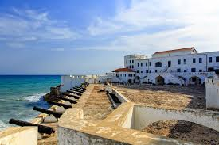 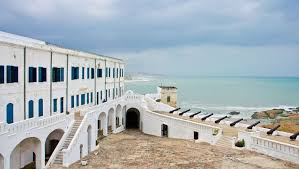 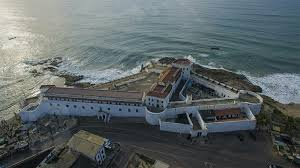 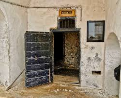 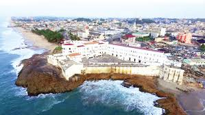CAPE COAST CASTLE
is one of about forty "slave castles", or large commercial forts, built on the Gold Coast of West Africa (now Ghana) by European traders. It was originally a Portuguese "feitoria" or trading post, established in 1555, which was named Cabo Corso. In 1653, a timber fort was constructed by the Swedish Africa Company. It originally was a centre for timber and gold trade, and then was later used in the Atlantic slave trade. Other Ghanaian slave castles include Elmina Castle and Fort Christiansborg. They were used to harbour enslaved Africans before they were loaded onto ships and sold in the Americas, especially the Caribbean. This "gate of no return" was the last stop before crossing the Atlantic Ocean. Cape Coast Castle, along with other forts and castles in Ghana, are included on the UNESCO World Heritage List because of their testimony to the Atlantic gold and slave trades
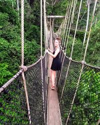 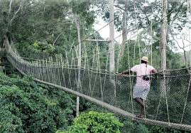KAKUM NATIONAL PARK
located in the coastal environs of the Central Region of Ghana, covers an area of 375 square kilometres (145 sq mi). Established in 1931 as a reserve, it was gazetted as a national park only in 1992 after an initial survey of avifauna was conducted. The area is covered with tropical forest. The uniqueness of this park lies in the fact that it was established at the initiative of the local people and not by the State Department of wildlife who are responsible for wildlife preservation in Ghana. It is one of only 3 locations in Africa with a canopy walkway,[8] which is 350 metres (1,150 ft) long and connects seven tree tops which provides access to the forest.
 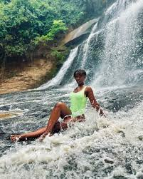
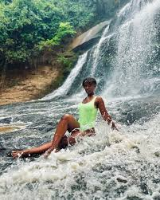
KINTAMPO WATER FALL
Is one of Ghana' highest waterfalls located in Bono East. It was formerly known as Sanders Falls during the colonial days.It is located on the Pumpum river, a tributary of the Black Volta, about 4 kilometres (2.5 mi) north of the Kintampo municipality, on the Kumasi–Tamale road. It is just after the Falls Rest Stop when moving Northwards, on the right side of the road. This waterfall is hidden in the forest and formed by three main drops, with the longest measuring 25 metres (82 ft), followed by a number of steps and cascades, and the river, which falls about 70 metres (230 ft)
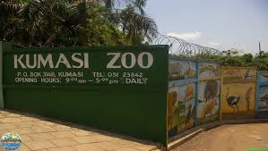 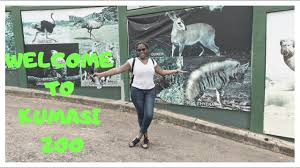KUMASI ZOO
The Kumasi Zoo (Kumasi Zoological Garden) is a zoo located in the heart of Kumasi in the Ashanti Region of Ghana. The zoo occupies a 1.5-square-kilometre (370-acre) area between the Kejetia Bus Terminal, the old race course and the Kumasi Centre for National Culture
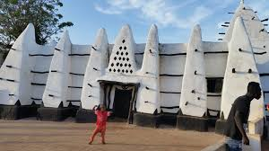LARBANGA MOSQUE
The mosque has an old Quran, believed by the locals to have been given as a gift from heaven in 1650 to Yidan Barimah Bramah, the Imam at the time, as a result of his prayers. The mosque, built using West African adobe, has two tall towers in pyramidal shape, one for the mihrab which faces towards Mecca forming the facade on the east and the other as a minaret in the northeast corner. These are buttressed by twelve bulbous shaped structures, which are fitted with timber elements.
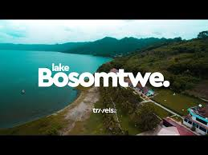LAKE BOSOMTWE
Lake Bosomtwe is the only natural lake in Ghana. It is situated within an ancient impact crater that is about 10.5 kilometres (6.5 mi) in diameter. It is about 30 km (19 mi) south-east of Kumasi, the capital of Ashanti, and is a popular recreational area. There are about 30 villages near the crater lake of Lake Bosomtwe, with a combined population of about 70,000. The most popular amongst the villages where tourists usually settle is Abono. The Ashanti consider Bosomtwe a sacred lake. According to traditional belief, the souls of the dead come here to bid farewell to the goddess Asase Ya. Because of this, it is considered permissible to fish in the lake only from wooden planks. Among the fish species in the lake is the endemic cichlid Hemichromis frempongi, and the near-endemic cichlids Tilapia busumana and
 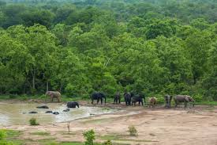 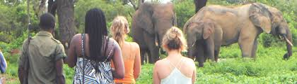
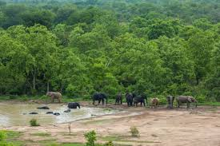 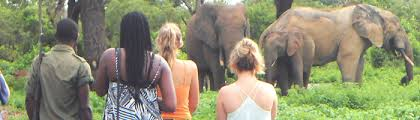
MOLE NATIONAL PARK
Mole National Park, one of Ghana's seven national parks, is the country's largest wildlife refuge. The park is located in the Savannah region of Ghana on savanna and riparian ecosystems at an elevation of 50 m, with a sharp escarpment forming the southern boundary of the park. The Park is 24 km from Damongo, the district capital, 146 km south east of Tamale, the Regional capital. The park is 700 km from Accra and 430 km from Kumasi. The park's entrance is reached through the nearby town of Larabanga. It covers an area of about 4,577 square kilometers of fairly undisturbed Guinea savannah in the northern part of Ghana. The Levi and Mole Rivers are ephemeral rivers flowing through the park, leaving behind only drinking holes during the long dry season. This area of Ghana receives over 10 mm per year of rainfall. A long-term study has been done on Mole National Park to understand the impact of human hunters on the animals in the preserve. The park is also Ghana’s most developed tourism site in terms of tourist amenities. The reserve has West Africa’s first luxury safari lodge nestled in the heart of the Mole forest. Zaina the country’s premier ecolodge provides world class hospitality service with a unique touch